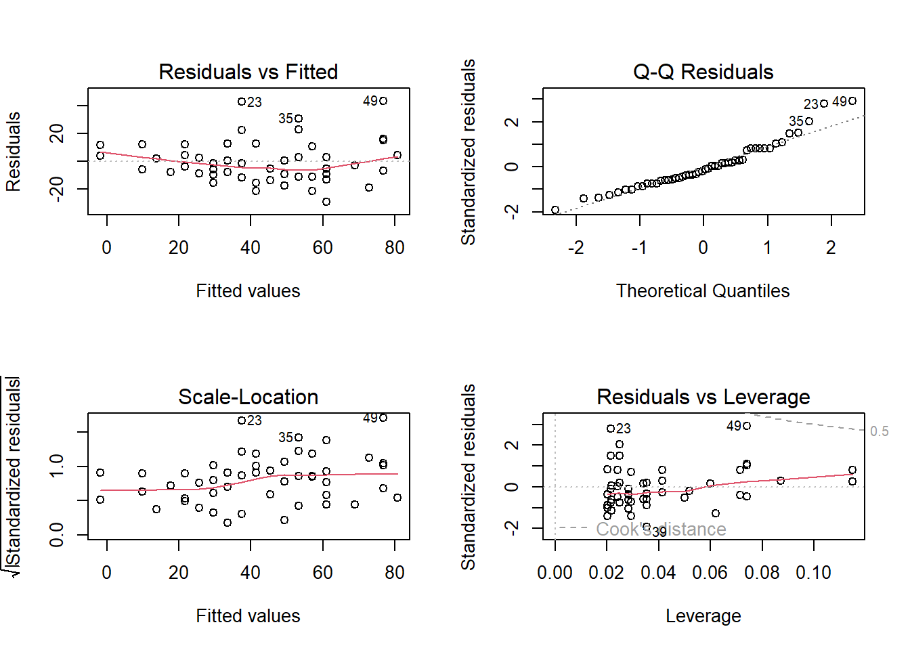

<!DOCTYPE html>

<html xmlns="http://www.w3.org/1999/xhtml">

<head>

<meta charset="utf-8" />
<meta http-equiv="Content-Type" content="text/html; charset=utf-8" />
<meta name="generator" content="pandoc" />


<title></title>

<script src="site_libs/jquery-1.11.3/jquery.min.js"></script>
<meta name="viewport" content="width=device-width, initial-scale=1" />
<link href="site_libs/bootstrap-3.3.5/css/flatly.min.css" rel="stylesheet" />
<script src="site_libs/bootstrap-3.3.5/js/bootstrap.min.js"></script>
<script src="site_libs/bootstrap-3.3.5/shim/html5shiv.min.js"></script>
<script src="site_libs/bootstrap-3.3.5/shim/respond.min.js"></script>
<script src="site_libs/navigation-1.1/tabsets.js"></script>
<link href="site_libs/font-awesome-5.0.13/css/fa-svg-with-js.css" rel="stylesheet" />
<script src="site_libs/font-awesome-5.0.13/js/fontawesome-all.min.js"></script>
<script src="site_libs/font-awesome-5.0.13/js/fa-v4-shims.min.js"></script>
<link href="site_libs/ionicons-2.0.1/css/ionicons.min.css" rel="stylesheet" />


<style type="text/css">code{white-space: pre;}</style>
<style type="text/css">
div.sourceCode { overflow-x: auto; }
table.sourceCode, tr.sourceCode, td.lineNumbers, td.sourceCode {
  margin: 0; padding: 0; vertical-align: baseline; border: none; }
table.sourceCode { width: 100%; line-height: 100%; background-color: #2a211c; color: #bdae9d; }
td.lineNumbers { text-align: right; padding-right: 4px; padding-left: 4px; background-color: #2a211c; color: #bdae9d; border-right: 1px solid #bdae9d; }
td.sourceCode { padding-left: 5px; }
pre, code { color: #bdae9d; background-color: #2a211c; }
code > span.kw { color: #43a8ed; font-weight: bold; } /* Keyword */
code > span.dt { text-decoration: underline; } /* DataType */
code > span.dv { color: #44aa43; } /* DecVal */
code > span.bn { color: #44aa43; } /* BaseN */
code > span.fl { color: #44aa43; } /* Float */
code > span.ch { color: #049b0a; } /* Char */
code > span.st { color: #049b0a; } /* String */
code > span.co { color: #0066ff; font-style: italic; } /* Comment */
code > span.al { color: #ffff00; } /* Alert */
code > span.fu { color: #ff9358; font-weight: bold; } /* Function */
code > span.er { color: #ffff00; font-weight: bold; } /* Error */
code > span.wa { color: #ffff00; font-weight: bold; } /* Warning */
code > span.cn { } /* Constant */
code > span.sc { color: #049b0a; } /* SpecialChar */
code > span.vs { color: #049b0a; } /* VerbatimString */
code > span.ss { color: #049b0a; } /* SpecialString */
code > span.im { } /* Import */
code > span.va { } /* Variable */
code > span.cf { color: #43a8ed; font-weight: bold; } /* ControlFlow */
code > span.op { } /* Operator */
code > span.bu { } /* BuiltIn */
code > span.ex { } /* Extension */
code > span.pp { font-weight: bold; } /* Preprocessor */
code > span.at { } /* Attribute */
code > span.do { color: #0066ff; font-style: italic; } /* Documentation */
code > span.an { color: #0066ff; font-weight: bold; font-style: italic; } /* Annotation */
code > span.co { color: #0066ff; font-weight: bold; font-style: italic; } /* Comment */
code > span.in { color: #0066ff; font-weight: bold; font-style: italic; } /* Information */
</style>
<style type="text/css">
  pre:not([class]) {
    background-color: white;
  }
</style>


<style type="text/css">
h1 {
  font-size: 34px;
}
h1.title {
  font-size: 38px;
}
h2 {
  font-size: 30px;
}
h3 {
  font-size: 24px;
}
h4 {
  font-size: 18px;
}
h5 {
  font-size: 16px;
}
h6 {
  font-size: 12px;
}
.table th:not([align]) {
  text-align: left;
}
</style>


</head>

<body>

<style type = "text/css">
.main-container {
  max-width: 940px;
  margin-left: auto;
  margin-right: auto;
}
code {
  color: inherit;
  background-color: rgba(0, 0, 0, 0.04);
}
img {
  max-width:100%;
  height: auto;
}
.tabbed-pane {
  padding-top: 12px;
}
.html-widget {
  margin-bottom: 20px;
}
button.code-folding-btn:focus {
  outline: none;
}
</style>


<style type="text/css">
/* padding for bootstrap navbar */
body {
  padding-top: 60px;
  padding-bottom: 40px;
}
/* offset scroll position for anchor links (for fixed navbar)  */
.section h1 {
  padding-top: 65px;
  margin-top: -65px;
}

.section h2 {
  padding-top: 65px;
  margin-top: -65px;
}
.section h3 {
  padding-top: 65px;
  margin-top: -65px;
}
.section h4 {
  padding-top: 65px;
  margin-top: -65px;
}
.section h5 {
  padding-top: 65px;
  margin-top: -65px;
}
.section h6 {
  padding-top: 65px;
  margin-top: -65px;
}
</style>

<script>
// manage active state of menu based on current page
$(document).ready(function () {
  // active menu anchor
  href = window.location.pathname
  href = href.substr(href.lastIndexOf('/') + 1)
  if (href === "")
    href = "index.html";
  var menuAnchor = $('a[href="' + href + '"]');

  // mark it active
  menuAnchor.parent().addClass('active');

  // if it's got a parent navbar menu mark it active as well
  menuAnchor.closest('li.dropdown').addClass('active');
});
</script>


<div class="container-fluid main-container">

<!-- tabsets -->
<script>
$(document).ready(function () {
  window.buildTabsets("TOC");
});
</script>

<!-- code folding -->


<div class="navbar navbar-default  navbar-fixed-top" role="navigation">
  <div class="container">
    <div class="navbar-header">
      <button type="button" class="navbar-toggle collapsed" data-toggle="collapse" data-target="#navbar">
        <span class="icon-bar"></span>
        <span class="icon-bar"></span>
        <span class="icon-bar"></span>
      </button>
      <a class="navbar-brand" href="index.html">Estadística</a>
    </div>
    <div id="navbar" class="navbar-collapse collapse">
      <ul class="nav navbar-nav">
        <li>
  <a href="pagin1.html">
    <span class="fa fa-home"></span>
     
    Estadística Básica
  </a>
</li>
<li>
  <a href="pagin2.html">
    <span class="fa fa-home"></span>
     
    Diseño de experimentos
  </a>
</li>
<li>
  <a href="about.html">
    <span class="fa fa-home"></span>
     
    Semillero de R
  </a>
</li>
      </ul>
      <ul class="nav navbar-nav navbar-right">
        <li>
  <a href="http://itm.edu.co">
    <span class="ion ion-university"></span>
     
  </a>
</li>
<li>
  <a href="https://github.com/estadisticaITM">
    <span class="fa fa-github"></span>
     
  </a>
</li>
      </ul>
    </div><!--/.nav-collapse -->
  </div><!--/.container -->
</div><!--/.navbar -->

<div class="fluid-row" id="header">


</div>


<div id="regresion-lineal" class="section level2">
<h2>Regresión lineal</h2>
<p>Permite establecer asociaciones entre variables de interés, entre las cuáles la relación usual no es necesariamente de causa efecto.</p>
<p>El objetivo es obtener estimaciones razonables de Y para distintos valores de X a partir de una muestra de n pares de valores (x1, y1), . . . ,(xn, yn).</p>
</div>
<div id="antes-de-hacer-un-modelo-de-regresion-lineal" class="section level2">
<h2>Antes de hacer un modelo de regresión lineal</h2>
<p>Se deben identificar observaciones extremas, alejadas hacia valores muy grandes o pequeños comparadas con el resto de valores, que puedan influenciar el ajuste de regresión. Para ello se recurre a un análisis descriptivo a través de boxplots ó diagramas de puntos.</p>
</div>
<div id="modelo-de-regresion-lineal-basico" class="section level2">
<h2>Modelo de regresión lineal básico</h2>
<p>El modelo más simple de regresión corresponde a: <span class="math display">\[\Large y_i=\beta_0 +\beta_1 X_i+\varepsilon_i\]</span> Donde:</p>
<p><span class="math inline">\(\Large y_i\)</span>Es la variable respuesta o dependiente para la i-ésima observación<br />
</p>
<p><span class="math inline">\(\Large \beta_0\)</span> Intercepto<br />
</p>
<p><span class="math inline">\(\Large \beta_1\)</span> Pendiente<br />
</p>
<p><span class="math inline">\(\Large X_i\)</span> Variable predictora independiente para la i-ésima observación<br />
</p>
<p><span class="math inline">\(\Large \varepsilon_i\)</span> Error aleatorio para la i-ésima observación<br />
</p>
<p><span class="math display">\[\Large \varepsilon_i \sim N (0,\sigma^2)\]</span></p>
</div>
<div id="objetivos-de-la-regresion-lineal" class="section level2">
<h2>Objetivos de la regresión lineal</h2>
<ul>
<li><p>Construir un modelo que describa el efecto o relación entre una variable X sobre otra variable Y.</p></li>
<li><p>Obtener estimaciones puntuales de los parámetros de dicho modelo.</p></li>
<li><p>Estimar el valor promedio de Y para un valor de X</p></li>
<li><p>Predecir futuros de la variable respuesta Y</p></li>
</ul>
</div>
<div id="algunos-ejemplos" class="section level2">
<h2>Algunos ejemplos</h2>
<ul>
<li><p>Estudiar cómo influye la estatura del padre sobre la estatura del hijo.</p></li>
<li><p>Estimar el precio de una vivienda en función de su área.</p></li>
<li><p>Aproximar la calificación obtenida en una materia según el numero de horas de estudio semanal.</p></li>
</ul>
</div>
<div id="diagrama-de-dispersion" class="section level2">
<h2>Diagrama de dispersión</h2>
<p>Diagrama matemático que utiliza las coordenadas cartesianas para mostrar los valores de dos variables para un conjunto de datos.</p>
<p></p>
</div>
<div id="medidas-de-dependencia-lineal" class="section level1">
<h1>Medidas de dependencia lineal</h1>
<div id="covarianza" class="section level2">
<h2>Covarianza</h2>
<p>La covarianza indica el grado de variación conjunta de dos variables aleatorias respecto a sus medias</p>
<p><span class="math display">\[\Large cov(x,y)=\frac{\sum_{i=1}^{n}(x_i-\bar{x})(y_i-\bar{y})}{(n-1)}\]</span> - Si hay relación lineal positiva, la covarianza será positiva y grande.</p>
<ul>
<li><p>Si hay relación lineal negativa, la covarianza será negativa y grande en valor absoluto.</p></li>
<li><p>Si no hay relación entre las variables la covarianza será próxima a cero.</p></li>
<li><p>La covarianza depende de las unidades de medida de las variables.</p></li>
</ul>
</div>
<div id="coeficiente-de-correlacion" class="section level2">
<h2>Coeficiente de correlación</h2>
<p>Indica la fuerza y la dirección de una relación lineal y proporcionalidad entre dos variables cuantitativas estadísticas.</p>
<p><span class="math display">\[\Large cor(x,y)=\frac{\sum_{i=1}^{n}(x_i-\bar{x})(y_i-\bar{y})}
{\sqrt{\sum_{i=1}^{n}(x_i-\bar{x})^2\sum_{i=1}^{n}(y_i-\bar{y})^2 }}\]</span></p>
</div>
<div id="caracteristicas-del-coeficiente-de-correlacion" class="section level2">
<h2>Características del coeficiente de correlación</h2>
<ul>
<li><p>Rango entre -1 y 1</p></li>
<li><p>Valores cercanos a -1 la relación es fuertemente negativa.</p></li>
<li><p>Valores cercanos a 1 la relación es fuertemente positiva.</p></li>
<li><p>Valores cercanos a 0 la relación es débil, es decir no hay una relación lineal</p></li>
</ul>
<p></p>
</div>
<div id="medida-de-bondad-de-ajuste-r2" class="section level2">
<h2>Medida de bondad de ajuste R^2</h2>
<p>Mide la proporción de la variabilidad total observada en la respuesta que es explicada por la asociación lineal. Por ser una proporción, esta cantidad varía entre 0 y 1, siendo igual a 0 cuando todos los coeficientes de regresión ajustados son iguales a cero, y es igual a 1 si todas las observaciones caen sobre la superficie de regresión ajustada. Definido como:</p>
<p><span class="math display">\[\Large R^2=1-\frac{SSE}{SST}=1-\frac{\sum_{i=1}^n (y_i-\hat{y_i})^2}{\sum_{i=1}^n (y_i-\bar{y_i})^2}\]</span> Donde</p>
<p>SSE: es la suma de cuadrados del error SST: suma de cuadrados totales</p>
</div>
<div id="error-de-pronostico-medio-mape" class="section level2">
<h2>Error de pronóstico medio MAPE</h2>
<p>Es importante evaluar la capacidad predictiva del modelo. En el trabajo aplicado, comparando los valores observados con los pronosticados, para lo cual se cuenta con el promedio del error porcentual aboluto. Dado por la fórmula:</p>
<p><span class="math display">\[\Large MAPE=\frac{\sum_{i=1}^n |\frac{y_i-\hat{y_i}}{y_i}|}{n}\]</span></p>
</div>
<div id="estimador-de-minimos-cuadrados" class="section level2">
<h2>Estimador de mínimos cuadrados</h2>
<p>Gauss propuso en 1809 el método de mínimos cuadrados para obtener los valores <span class="math inline">\(\hat{\beta_0}, \hat {\beta_1}\)</span> que mejor se ajustan a los datos:</p>
<p><span class="math display">\[\Large y_i=\beta_0+\beta_1x_i+\varepsilon_i\]</span></p>
<p>El método consiste en minimizar la suma de los cuadrados de las distancias verticales entre los datos y las estimaciones, es decir, minimizar la suma de los residuos al cuadrado:</p>
<p><span class="math display">\[\Large \sum_{i=1}^n(y_i-\hat{y_i})^2=
\sum_{i=1}^n (y_i-(\hat{\beta_0}+ \hat{\beta_1}x_i))^2\]</span></p>
<p>el resultado que se obtiene es:</p>
<p><span class="math display">\[\Large \hat{\beta_1}=\frac{S_{xy}}{S_{xx}}=\frac{cov(x,y)}{S_{xx}}=\frac{\sum_{i=1}^{n}(x_i-\bar{x})(y_i-\bar{y})}{\sum_{i=1}^{n}(x_i-\bar{x})^2}\]</span></p>
<p>A las cantidades <span class="math inline">\(\Large S_{xx}\)</span> y <span class="math inline">\(\Large S_{xy}\)</span> se les conoce como suma corregida de cuadrados y suma corregida de productos cruzados de x y y, respectivamente <span class="math display">\[\Large \hat{\beta_0}=\bar{y}-\hat{\beta_1}\bar{x}\]</span></p>
<p></p>
</div>
<div id="residuales" class="section level2">
<h2>Residuales</h2>
<p>La diferencia de cada valor <span class="math inline">\(y_i\)</span> de la variable respuesta y su estimación <span class="math inline">\(\hat{y_i}\)</span> se llama residuo. <span class="math display">\[\Large e_i= y_i- \hat{y_i}\]</span></p>
<p></p>
<p>La varianza de los términos de error <span class="math inline">\(\varepsilon_i\)</span>, es decir, <span class="math inline">\(V[\varepsilon_i]=\sigma^2\)</span>, da un indicador de la variabilidad de las distribuciones de probabilidad de Y para los distintos valores de X. En este caso la suma cuadrática de errores o residuales es:</p>
<p><span class="math display">\[\Large SSE=\sum_{i=1}^{n}(y_i-\hat{y_i})^2=\sum_{i=1}^n e^2_i\]</span> La SSE tiene asociada n−2 grados de libertad (gl), pues se pierden 2 (gl) al estimar <span class="math inline">\(\beta_0\)</span> y <span class="math inline">\(\beta_1\)</span>, para obtener a <span class="math inline">\(\hat{y_i}\)</span>, de lo anterior se obtiene la media cuadática de errores dada por:</p>
<p><span class="math display">\[\Large MSE=\frac{SSE}{n-2}=\frac{\sum_{i=1}^{n}(y_i-\hat{y_i})^2}{n-2}=\frac{\sum_{i=1}^n e^2_i}{n-2}\]</span></p>
<p>Se puede demostrar que MSE, es un estimador insesgado de <span class="math inline">\(\Large \sigma^2\)</span> para el modelo de RLS, es decir que:</p>
<p><span class="math display">\[\Large \sigma^2=MSE\]</span> Además <span class="math display">\[\Large E(MSE)=\sigma\]</span> ###Suma total de cuadrados</p>
<p>La medida de variación de y alrededor de la la media muestral <span class="math inline">\(\bar{y}\)</span> es: <span class="math display">\[\Large SST=\sum_{i=1}^n(Y_i-\bar{Y})^2\]</span> ## Suma cuadrática de regresión La diferencia entre la SST y la SSE se denota por:</p>
<p><span class="math display">\[\Large SSR=\sum_{i=1}^n(\hat{Y_i}-\bar{Y})^2\]</span> La SSR es una medida de la parte de la variabilidad de las observaciones <span class="math inline">\(y_i\)</span>, la cual está asociada con la línea de regresión ajustada.</p>
<p>De lo anterior, se obtiene la identidad fundamental del análisis de varianza, la cual está dada por:</p>
<p><span class="math display">\[\Large SST = SSR + SSE\]</span></p>
<p>Aquí, SST: Variabilidad muestral total y tiene n−1 grados de libertad.</p>
<p>SSR: Variabilidad explicada por el modelo o por las variables regresoras X y tiene 1 grado de libertad.</p>
<p>SSE: Variabilidad no explicada por el modelo o error y tiene n−2 grados de libertad.</p>
</div>
<div id="medias-cuadraticas" class="section level2">
<h2>Medias cuadráticas</h2>
<p>Las medias cuadráticas se obtienen, como las SS divididas por sus respectivos grados de libertad, es decir que:</p>
<p><span class="math inline">\(\Large MST=\frac{SST}{n-1}\)</span>: Cuadrado medio total</p>
<p><span class="math inline">\(\Large MSR=\frac{SSR}{1}\)</span>:Cuadrado medio de la regresión</p>
<p><span class="math inline">\(\Large MSE=\frac{SSE}{n-2}\)</span>: Cuadrado medio del error</p>
</div>
<div id="tabla-de-resumen-del-analisis-de-varianza" class="section level2">
<h2>Tabla de resumen del análisis de varianza</h2>
<table>
<thead>
<tr class="header">
<th>Factor</th>
<th>Grados de libertad</th>
<th>Suma de cuadrados</th>
<th>Medias cuadráticas</th>
<th>Estadístico</th>
</tr>
</thead>
<tbody>
<tr class="odd">
<td>Regresión</td>
<td>1</td>
<td>SSR</td>
<td>MSR</td>
<td>Fc</td>
</tr>
<tr class="even">
<td>Error</td>
<td>n-2</td>
<td>SSE</td>
<td>MSE</td>
<td></td>
</tr>
<tr class="odd">
<td>Total</td>
<td>n-1</td>
<td>SST</td>
<td>MST</td>
<td></td>
</tr>
</tbody>
</table>
</div>
<div id="prueba-de-significancia-de-la-regresion" class="section level2">
<h2>Prueba de significancia de la regresión</h2>
<p>Considere las siguientes afirmaciones, las cuales son llamadas pruebas de hipótesis o prueba de significancia de la regresión:</p>
<p>Hipótesis nula: <span class="math inline">\(\LargeH_0: \beta_i=0\)</span> el parámetro no es significativo</p>
<p>Hipótesis alternativa: <span class="math inline">\(\Large H_1: \beta_i \not= 0\)</span>: el parámeto es significativo</p>
<p>El estadístico de prueba corresponde a</p>
<p><span class="math display">\[\Large F_c=\frac{MSR}{MSE}\sim F_{(1,n-2)}\]</span></p>
</div>
<div id="desicion" class="section level2">
<h2>Desición</h2>
<p>Rechazar <span class="math inline">\(\Large H_0\)</span> si <span class="math inline">\(\Large F_c&gt;F_{(1,n-2)}\)</span></p>
</div>
<div id="valor-p" class="section level2">
<h2>Valor p</h2>
</div>
<div id="estimacion-de-la-varianza" class="section level2">
<h2>Estimación de la varianza</h2>
<p>Para estimar la varianza de los errores <span class="math inline">\(\sigma^2\)</span>, podemos utilizar el estimador máximo verosimil:</p>
<p><span class="math display">\[\Large {\hat{\sigma}}^2=\frac{\sum_{i=1}^n {e}_i^2}{n}\]</span></p>
</div>
<div id="significado-de-beta_0-y-beta_1" class="section level2">
<h2>Significado de <span class="math inline">\(\beta_0\)</span> y <span class="math inline">\(\beta_1\)</span></h2>
<ul>
<li><p><span class="math inline">\(\Large \beta_0\)</span> es el intercepto</p></li>
<li><p><span class="math inline">\(\Large \beta_1\)</span> es el valor de la pendiente, es decir que por cada unidad que aumente la variable independiente, la variable dependiente aumenta <span class="math inline">\(\beta_1\)</span> unidades</p></li>
</ul>
</div>
<div id="ejemplo" class="section level2">
<h2>Ejemplo</h2>
<p>Los siguientes datos proveen las velocidades en metros por segundo y las distancias necesarias para frenar en metros</p>
<div class="sourceCode"><pre class="sourceCode r"><code class="sourceCode r"><span class="kw">head</span>(cars)</code></pre></div>
<pre><code>##   speed dist
## 1     4    2
## 2     4   10
## 3     7    4
## 4     7   22
## 5     8   16
## 6     9   10</code></pre>
<p>En este caso ¿Cuál es la variable dependiente e independiente?</p>
</div>
<div id="diagrama-de-dispersion-1" class="section level2">
<h2>Diagrama de dispersión</h2>
<div class="sourceCode"><pre class="sourceCode r"><code class="sourceCode r"><span class="kw">plot</span>(cars<span class="op">$</span>speed,cars<span class="op">$</span>dist)</code></pre></div>
<p></p>
</div>
<div id="modelo-de-regresion-lineal" class="section level2">
<h2>Modelo de regresión lineal</h2>
<p>Para este modelo el modelo de regresión lineal es</p>
<p><span class="math display">\[\Large \hat{y}=-17.57+3.93x\]</span></p>
<p>Donde</p>
<ul>
<li><p>X representa la velocidad en metros por segundo</p></li>
<li><p>y es la distancia de frenado en metros</p></li>
</ul>
</div>
<div id="resultados-del-modelo-en-r" class="section level2">
<h2>Resultados del modelo en R</h2>
<pre><code>## 
## Call:
## lm(formula = cars$dist ~ cars$speed)
## 
## Residuals:
##     Min      1Q  Median      3Q     Max 
## -29.069  -9.525  -2.272   9.215  43.201 
## 
## Coefficients:
##             Estimate Std. Error t value Pr(&gt;|t|)    
## (Intercept) -17.5791     6.7584  -2.601   0.0123 *  
## cars$speed    3.9324     0.4155   9.464 1.49e-12 ***
## ---
## Signif. codes:  0 &#39;***&#39; 0.001 &#39;**&#39; 0.01 &#39;*&#39; 0.05 &#39;.&#39; 0.1 &#39; &#39; 1
## 
## Residual standard error: 15.38 on 48 degrees of freedom
## Multiple R-squared:  0.6511, Adjusted R-squared:  0.6438 
## F-statistic: 89.57 on 1 and 48 DF,  p-value: 1.49e-12</code></pre>
<p></p>
<pre><code>## [1] 0.8068949</code></pre>
<div id="anova-del-modelo" class="section level3">
<h3>anova del modelo</h3>
<pre><code>## Analysis of Variance Table
## 
## Response: cars$dist
##            Df Sum Sq Mean Sq F value   Pr(&gt;F)    
## cars$speed  1  21186 21185.5  89.567 1.49e-12 ***
## Residuals  48  11354   236.5                     
## ---
## Signif. codes:  0 &#39;***&#39; 0.001 &#39;**&#39; 0.01 &#39;*&#39; 0.05 &#39;.&#39; 0.1 &#39; &#39; 1</code></pre>
</div>
</div>
<div id="modelo-de-regresion-lineal-simple-en-la-calculadora" class="section level2">
<h2>Modelo de regresión lineal simple en la calculadora</h2>
<ul>
<li>como estimar un modelo de <a href="https://www.youtube.com/watch?v=4_WO31Dapv0">regresión lineal</a> en la calculadora</li>
<li>Dados los siguientes datos elabore</li>
</ul>
<ol style="list-style-type: decimal">
<li>Diagrama de dispersión</li>
<li>Ajuste del modelo lineal</li>
<li>Estime el valor de la correlación</li>
</ol>
</div>
<div id="validacion-de-los-supuestos" class="section level2">
<h2>Validación de los supuestos</h2>
<p>A través del análisis de residuales del modelo es posible detectar la linealidad entre las variables X e Y, la media cero, varianza constante, incorrelación, y normalidad.</p>
<div id="qqplot" class="section level3">
<h3>QQplot</h3>
<p>permite verificar la normalidad de los errores. Si es cierta la normalidad de los residuos, los puntos deben estar alineados con la diagonal.</p>
<p></p>
</div>
<div id="grafico-de-los-residuos-versus-los-valores-ajustados" class="section level3">
<h3>Gráfico de los residuos versus los valores ajustados</h3>
<p>Si los residuos están distribuidos alrededor del cero y el gráfico no presenta ninguna tendencia, entonces el modelo se considera adecuado. Note que si se observa una tendencia, estaríamos violando el supuesto de linealidad (lo cual sugiere alguna transformación), y si se observa una nube de puntos en forma de embudo, podemos tener problemas con el supuesto de homocedasticidad de varianzas.</p>
</div>
</div>
<div id="regresion-lineal-multiple" class="section level2">
<h2>Regresión lineal múltiple</h2>
<p>Considere el caso en el cual se desea modelar la variabilidad total de una variable respuesta de interés, en función de relaciones lineales con dos o más variables predictoras, formuladas simultáneamente en un único modelo. Suponemos en principio que las variables predictoras guardan poca asociación lineal entre sí, es decir, cada variable predictora aporta información independiente de las demás predictoras presentes en el modelo (hasta cierto grado, la información aportada por cada una no es redundante). La ecuación del modelo de regresión en este caso es:</p>
<p><span class="math display">\[\Large y_i=\beta_0+\beta_1x_{i1}+\beta_2x_{i2}+...+\beta_kx_{ik}\varepsilon_i\]</span></p>
</div>
<div id="tipos-de-variables-y-de-efectos-en-los-modelos" class="section level2">
<h2>Tipos de variables y de efectos en los modelos</h2>
<p>Las variables predictoras pueden ser:  Cuantitativas, caso en el cual se supone se miden sin error (o el error es despreciable).</p>
<p> Cualitativas o categóricas, en este caso su manejo en el modelo se realiza a través de la definición de variables indicadoras, las cuales toman valores de 0 ó 1.</p>
<p>Por ejemplo, suponga que en un modelo de regresión para el gasto mensual por familia en actividades recreativas, se tiene entre las variables predictoras el estrato socioeconómico, definido en cinco niveles, luego, para cada nivel se define una variable indicadora de la siguiente forma:</p>
<p>Estrato 1: <span class="math display">\[ \Large  I_1 =\left\lbrace \begin{array}{rcl}
            {1\quad familia \quad estrato \quad 1}
         \\
            {0 \quad En \quad otro \quad caso  }
         \end{array}  \right. \]</span></p>
<p>Estrato 2</p>
<p><span class="math display">\[ \Large
           I_2 =\left\lbrace   \begin{array}{rcl}
            {1\quad familia \quad estrato \quad 2}
            \\
            {0 \quad En \quad otro \quad caso  }
         \end{array}  \right.          \]</span> Estrato 3</p>
$$ I_3 =
<span class="math display">\[\begin{array}{rcl}
            
            {1\quad familia \quad estrato \quad 3}
         \\
            {0 \quad En \quad otro \quad caso  }
         \end{array}\]</span>
<p>. $$</p>
Estrato 4 $$  I_4 =
<span class="math display">\[\begin{array}{rcl}
            
            {1\quad familia \quad estrato \quad 4}
         \\
            {0 \quad En \quad otro \quad caso  }
         \end{array}\]</span>
<p>.$$</p>
<p>En general, una variable cualitativa con c clases se representa mediante c -1 variables indicadoras, puesto que cuando en una observación dada, todas las c -1 primeras indicadoras son iguales a cero, entonces la variable cualitativa se haya en su última clase. En el ejemplo anterior basta definir las primeras cuatro indicadoras.</p>
<iframe width="560" height="315" src="https://www.youtube.com/embed/eG5tI6aYgos" frameborder="0" allow="accelerometer; autoplay; encrypted-media; gyroscope; picture-in-picture" allowfullscreen>
</iframe>
</div>
<div id="ejemplo-1" class="section level2">
<h2>Ejemplo:</h2>
<p>La siguiente base de datos relaciona 7 medidas del crecimiento de 5 tipos de arboles en el tiempo en meses y el diámetro en mm.</p>
<pre><code>##   Tree  age circumference
## 1    1  118            30
## 2    1  484            58
## 3    1  664            87
## 4    1 1004           115
## 5    1 1231           120
## 6    1 1372           142</code></pre>
<p>El diagrama de dispersión simple es:</p>
<p></p>
<p>El modelo de regresión lineal simple corresponde a:</p>
<pre><code>## 
## Call:
## lm(formula = Orange$circumference ~ Orange$age)
## 
## Residuals:
##     Min      1Q  Median      3Q     Max 
## -46.310 -14.946  -0.076  19.697  45.111 
## 
## Coefficients:
##              Estimate Std. Error t value Pr(&gt;|t|)    
## (Intercept) 17.399650   8.622660   2.018   0.0518 .  
## Orange$age   0.106770   0.008277  12.900 1.93e-14 ***
## ---
## Signif. codes:  0 &#39;***&#39; 0.001 &#39;**&#39; 0.01 &#39;*&#39; 0.05 &#39;.&#39; 0.1 &#39; &#39; 1
## 
## Residual standard error: 23.74 on 33 degrees of freedom
## Multiple R-squared:  0.8345, Adjusted R-squared:  0.8295 
## F-statistic: 166.4 on 1 and 33 DF,  p-value: 1.931e-14</code></pre>
<p>La ecuación del modelo de regresión general es:</p>
<p><span class="math display">\[\Large \hat y_i=17.4+0.1x_{i}\]</span> Donde <span class="math inline">\(y_i\)</span> es la circunferenciua del</p>
<p>La linea de regresión ajustada corresponde a</p>
<p></p>
</div>
<div id="significado-de-la-pendiente-y-el-intercepto" class="section level2">
<h2>Significado de la pendiente y el intercepto</h2>
<p>El intercepto es la respuesta media observada en el crecimiento de los arboles.</p>
<p>La péndiente indica que por cada mes que pasa la circunferencia del arbol aumenta 0.1 unidades</p>
<p>El diagrama de dispersión discriminando por los niveles de la variables factor es:</p>
<p></p>
<p>El modelo de regresión lineal con factores corresponde a</p>
<pre><code>## 
## Call:
## lm(formula = Orange$circumference ~ Orange$age + as.factor(Orange$Tree))
## 
## Residuals:
##     Min      1Q  Median      3Q     Max 
## -30.505  -8.790   3.737   7.650  21.859 
## 
## Coefficients:
##                           Estimate Std. Error t value Pr(&gt;|t|)    
## (Intercept)              17.399650   5.543461   3.139  0.00388 ** 
## Orange$age                0.106770   0.005321  20.066  &lt; 2e-16 ***
## as.factor(Orange$Tree).L 39.935049   5.768048   6.923 1.31e-07 ***
## as.factor(Orange$Tree).Q  2.519892   5.768048   0.437  0.66544    
## as.factor(Orange$Tree).C -8.267097   5.768048  -1.433  0.16248    
## as.factor(Orange$Tree)^4 -4.695541   5.768048  -0.814  0.42224    
## ---
## Signif. codes:  0 &#39;***&#39; 0.001 &#39;**&#39; 0.01 &#39;*&#39; 0.05 &#39;.&#39; 0.1 &#39; &#39; 1
## 
## Residual standard error: 15.26 on 29 degrees of freedom
## Multiple R-squared:  0.9399, Adjusted R-squared:  0.9295 
## F-statistic:  90.7 on 5 and 29 DF,  p-value: &lt; 2.2e-16</code></pre>
<p>La recta general del modelo es:</p>
<p><span class="math display">\[\Large \hat y_i=17.4+0.1x_{i}+39.93arbol_2+2.51arbol_3-8.26arbol_4-4.69arbol_5\]</span></p>
<p>Las rectas ajustadas para cada arbol son:</p>
<p>Arbol 1:</p>
<p><span class="math display">\[\Large \hat y_i=17.4+0.1x_{i}\]</span></p>
<p>Arbol 2: <span class="math display">\[\Large \hat y_i=57.33+0.1x_{i}\]</span> Arbol 3: <span class="math display">\[\Large \hat y_i=19.92+0.1x_{i}\]</span></p>
<p>Arbol 4: <span class="math display">\[\Large \hat y_i=9.14+0.1x_{i}\]</span> Arbol 5: <span class="math display">\[\Large \hat y_i=12.71+0.1x_{i}\]</span></p>
</div>
</div>

<br>
<hr>
<p><center>Copyright &copy; 2019, webpage made with Rmarkdown.</center></p>
<hr>


</div>

<script>

// add bootstrap table styles to pandoc tables
function bootstrapStylePandocTables() {
  $('tr.header').parent('thead').parent('table').addClass('table table-condensed');
}
$(document).ready(function () {
  bootstrapStylePandocTables();
});


</script>

<!-- dynamically load mathjax for compatibility with self-contained -->
<script>
  (function () {
    var script = document.createElement("script");
    script.type = "text/javascript";
    script.src  = "https://mathjax.rstudio.com/latest/MathJax.js?config=TeX-AMS-MML_HTMLorMML";
    document.getElementsByTagName("head")[0].appendChild(script);
  })();
</script>

</body>
</html>
